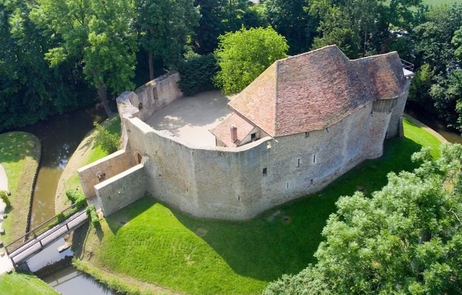
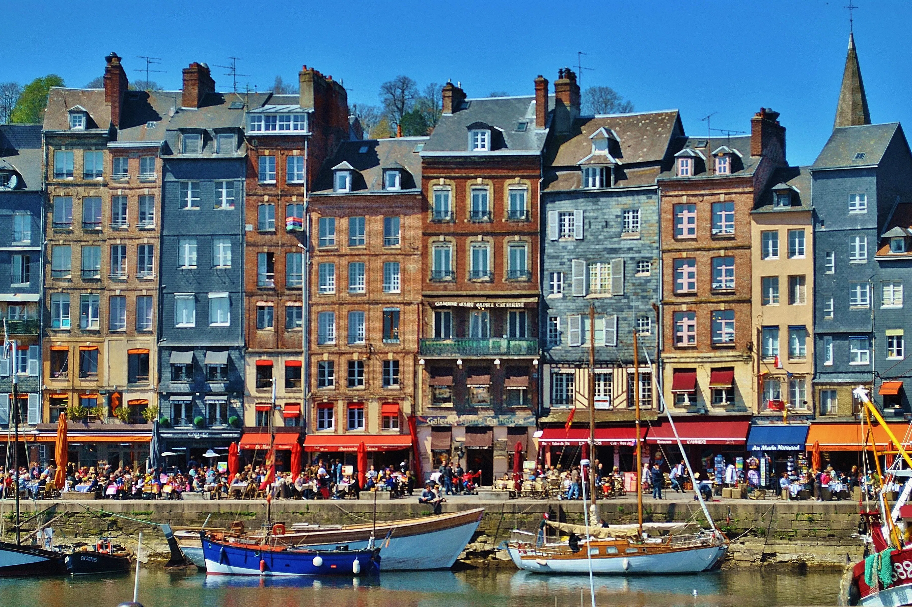

Alentours
Nichés au cœur de la région du Pays d'Auge en Normandie, nos gîtes offrent le point de départ idéal pour découvrir le riche patrimoine, les paysages magnifiques et les délices culinaires de la région.

🏰 Château de Crèvecœur
À 10-15 minutes
Un château médiéval et musée magnifiquement préservé présentant l'héritage normand et l'histoire de la production d'huile. Parfait pour les passionnés d'histoire et les familles.
📍 Itinéraire
⚓ Honfleur
À 45 minutes
Une ville portuaire pittoresque avec un vieux port charmant, des galeries d'art et d'excellents restaurants de fruits de mer. Ne manquez pas le Vieux Bassin et l'église Sainte-Catherine.
📍 Itinéraire
🍎 Route du Calvados & du Cidre
À 15-20 minutes
Le Pays d'Auge est célèbre pour la production de Calvados (eau-de-vie de pomme) et de cidre. Visitez les distilleries locales, dégustez les produits régionaux et découvrez l'artisanat normand traditionnel.
🍎 Visiter le siteÉgalement à proximité : Deauville, Cabourg et les magnifiques plages de la Côte Fleurie à seulement 45 minutes !
Rencontrez Adeline
Bienvenue ! Je suis Adeline, la fière propriétaire des Gîtes & Spa les 4 Nations. Ma famille vit sur cette terre depuis des générations, et je suis ravie de partager sa beauté et sa tranquillité avec vous.
Après des années de rêve, j'ai décidé de transformer notre maison familiale historique en un refuge paisible pour les invités cherchant une pause de l'agitation de la vie urbaine. Mon objectif est de fournir une atmosphère chaleureuse et accueillante où vous pouvez vous détendre, vous ressourcer et vous reconnecter avec la nature.
Nous avons hâte de vous accueillir !